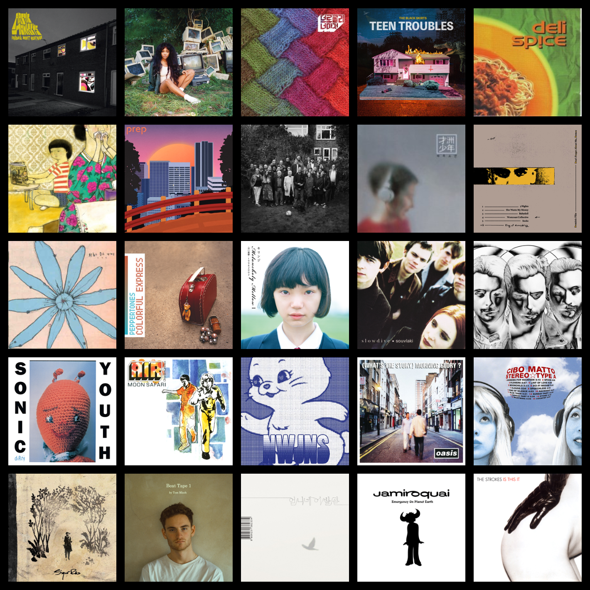

나
topster

1. Arctic Monkeys - Favourite Worst Nightmare
2. SZA - CTRL
3. 브로콜리 너마저 - 잔인한 사월
4. The Black Skirts - TEEN TROUBLES
5. 델리 스파이스 - Deli Spice
6. 불나방 스타 쏘세지 클럽 - 고질적 신파
7. Prep - PREP
8. Loyle Carner - Yesterday's Gone
9. 재주소년 - 재주소년
10. Dominic Fike - Don't Forget About Me, Demos
11. 이상은 - 외롭고 웃긴 가게
12. Peppertones - Colorful Express
13. KIRINJI - Melancholy Mellow | -甘い豪鬱-199820
14. Slowdive - Souvlaki
15. Swedish House Mafia - Until Now
16. Sonic Youth - Dirty
17. Air - Moon Safari
18. 뉴진스 - NewJeans 1st EP 'New Jeans'
19. Oasis - (What's the Story) Morning Glory?
20. Cibo Matto - Stereotype A
21. Sigur Rós - Takk ...
22. Tom Misch - Beat Tape 1
23. 언니네 이발관 - 가장 보통의 존재
24. Jamiroquai - Emergency On Planet Earth
25. The Strokes - Is This It